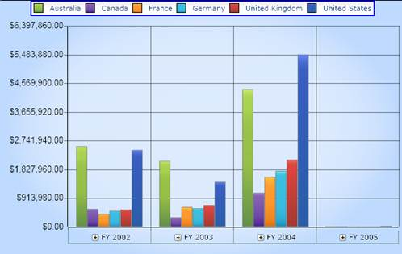
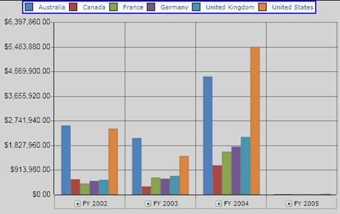

Essential BI OLAP Chart for Silverlight provides options to customize the appearance of the chart by doing the following:
· Applying different chart types by using the ChartType property.
· Setting the Chart legend position.
· Aligning the chart to horizontal or vertical alignment.
The following table lists the properties that are used to customize the Chart Style and the Legends programmatically:
Table 15: Chart Appearance Properties
|
Property |
Description |
|
LegendDockPosition |
Specifies the position of the legend. |
|
HorizontalAlignment |
Specifies the horizontal alignment of the control within the parent. |
|
VerticalAlignment |
Specifies the vertical alignment of the control within the parent. |
|
Background |
The background property in the OlapArea can be used to customize the background of the chart area. |
|
Foreground |
The foreground property in the OlapArea can be used to customize the foreground text color in the chart area. |
|
Palette |
The Palette property is used for customizing the series with pre-defined business color palettes. |
Set these properties by using the below code:
|
[XAML]
<sfchart:OlapChart x:Name="olapChart1" LegendDockPosition="Top" HorizontalAlignment="Stretch" VerticalAlignment="Stretch"/> |
|
[C#]
this.olapChart1.HorizontalAlignment = HorizontalAlignment.Stretch; this.olapChart1.VerticalAlignment = VerticalAlignment.Stretch; this.olapChart1.LegendDockPosition = ChartDock.Top;
this.olapChart1.OlapArea.Background = new SolidColorBrush(Colors.LightGray); this.olapChart1.OlapArea.ColorModel.Palette = ChartColorPalette.Palette8; this.olapChart1.OlapArea.Foreground = new SolidColorBrush(Colors.DarkGray);
|
|
[VB]
Me.olapChart1.HorizontalAlignment = HorizontalAlignment.Stretch Me.olapChart1.VerticalAlignment = VerticalAlignment.Stretch Me.olapChart1.LegendDockPosition = ChartDock.Top
Me.olapChart1.OlapArea.Background = New SolidColorBrush(Colors.LightGray) Me.olapChart1.OlapArea.ColorModel.Palette = ChartColorPalette.Palette8 Me.olapChart1.OlapArea.Foreground = New SolidColorBrush(Colors.Black)
|
The following screenshot shows a column chart with the above settings:

Figure 36: HorizontalAlignment="Stretch"; VerticalAlignment="Stretch"; LegendDockPosition="Top"

Figure 37: Background, Foreground and Palette customization
 Note: In the above sample,the Palette8 is
used, which is the excel palette.
Note: In the above sample,the Palette8 is
used, which is the excel palette.
See also
ChartSeries